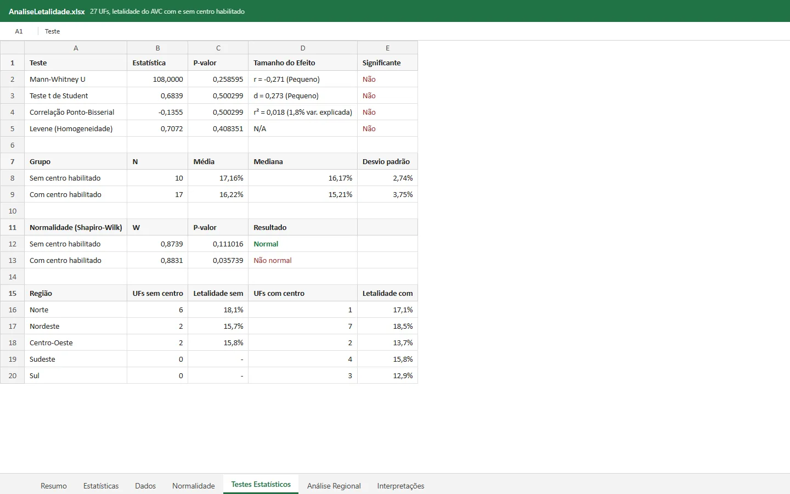

PortfólioModelos preditivos e estatística
Estrutura de saúde e letalidade do AVC
Análise estatística da relação entre a estrutura de atendimento de cada estado, como tomógrafos, neurologistas e taxa de trombólise, e a letalidade do AVC.
- Cliente
- Pesquisa em saúde pública
- Unidade
- 27 UFs
- Testes
- Spearman, Kruskal-Wallis, Mann-Whitney, t
- Saída
- Relatórios em texto e Excel
Objetivo
Verificar se a estrutura de atendimento de cada estado explica a letalidade do AVC.
Duas perguntas: a letalidade cai onde há mais trombólise, tomógrafos e neurologistas? Estados com centro habilitado para AVC têm letalidade menor?
Dados
- Unidade27 UFs, agrupadas nas 5 regiões.
- VariáveisLetalidade, taxa de trombólise, tomógrafos por 100 mil e neurologistas por 100 mil habitantes.
- GrupoCentro habilitado: 17 UFs com centro e 10 sem centro.
- QualidadeNenhum valor ausente nas 4 variáveis; percentuais limpos antes do cálculo.
Organização da análise
Correlação com a letalidade
Spearman, 27 UFs. p = 0,0021; 0,0047; 0,0129.
Matriz de correlação
Letalidade por região
Kruskal-Wallis: H = 10,43; p = 0,034.
Centro habilitado
Letalidade média por grupo
Diferença de 0,93 p.p. Mann-Whitney U = 108, p = 0,259. Teste t: p = 0,500.
Achados
correlação da taxa de trombólise com a letalidade, a mais forte das três (p = 0,002)
a letalidade difere entre as regiões: Norte 17,95% e Sul 12,91%
centro habilitado não muda a letalidade de forma significativa
da variação da letalidade explicada pela presença de centro (r ponto-bisserial = −0,136)
Limites
- AgregadoDados por estado, não por paciente.
- TransversalUm só período; não mede antes e depois da habilitação.
- Amostra27 UFs; nas regiões, de 3 a 9 UFs, o que torna os testes regionais frágeis.
- CausalidadeCorrelação não prova causa; variáveis como renda e população não foram controladas.
Telas
Reprodução da planilha gerada, com os resultados reais da análise.

